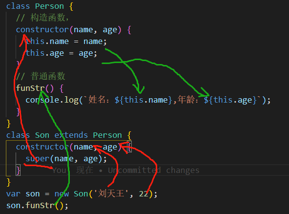
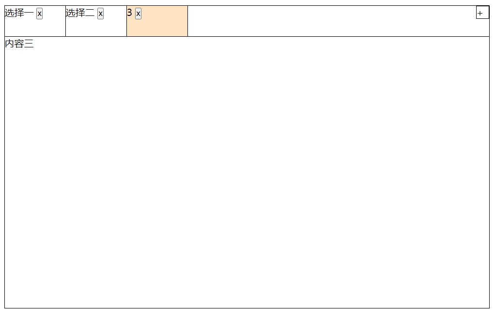

1、面向对象与面向过程
1.1 面向过程编辑POP(Process-oriented programming)
面向过程就是分析出解决问题所需要的步骤，然后用函数把这些步骤一步一步实现，使用的时候再一个一个的依次调用就可以了。面向过程，就是按照我们分析好的步骤，按照步骤解决问题。
1.2 面向对象编程OOP(Object Oriented Programming)
面向对象是把事务分解成一个个对象，然后由对象之间分工与合作。是以对象功能来划分问题，而不是步骤。
面向对象编辑具有灵活、代码可复用、容易维护和开发的优点。
面向对象的三大特征：封装性、继承性、多态性。
优点：易维护、易复用，易扩展，可以设计 出低耦合的系统，使系统更灵活、更加易于维护。
缺点：性能比面向过程低。
2.类和对象
2.1 对象
万物皆对象，对象是一个具体的事物，看得见摸得着的实物。例如：一本书、一个人可以是对象，一个数据库、一个远程服务器的连接也可以是对象。
在JavaScript中，对象是一组无序的相关属性和方法的集合，所有的事物都是对象，使用数据、数组、函数等。
对象是由属性和方法组件的：
属性：事物的特征，在对象中用属性来表示(常用名词)
方法：事物的行为，在对象中用方法来表示(常用动词)
2.2 类 class
在ES6中增加了类的概念，可以使用class关键字声明一个类，之后以这个类来实例化对象。
类抽象了对的公共部分，它泛指某一大类(class)
对象特指某一个，通过类实例化一个具体的对象
2.3 创建类
创建实例：类必须使用new 实例化对象
new在执行时会做四件事性：
- 在内存中创建一个新的空对象
- 让this指向这个新的对象
- 执行构造函数里的代码，给这个新对象添加属性和方法
- 返回这个新对象(所以构造函数里面不需要return)
2.4 构造函数 constructor
constructor()方法是类的构造函数(默认方法)，用于传递参数，返回实例对象，通过new命令生成对象实例时，自动调用该方法。如果没有显示定义，类内部会自动给我们创建一个constructor().
1 通过class关键字创建类，首字母大写
2 constructor函数，可以接受传递过来的参数，同时返回实例对象
3 constructor只要new 生成实例时，就会自动调用这个函数，如果不写，类也会自动生成这个函数
4 生成实例,new 不能省略
5 创建类，类名后不加小括号，生成实例 类名后面要加小括号，构建函数不需要function
3、类的继承
3.1 extends类的继承
1
2
3
4
5
6
7
8
9
10
11
12
13
14
15
16
| class Person {
constructor(name, age) {
this.name = name;
this.age = age;
}
sing(){
console.log("我会唱歌")
}
}
class Son extends Person {
constructor(){}
}
var son = new Son();
son.sing();
|
son通过extends继承person，son本身没有sing（）方法，但是由于继承了person，person中具有sing方法，于是可以执行son.sing()
3.2 super关键字
super 用于访问和 调用对象父类上的函数。可以调用父类的构造函数，也可以调用父类的普通函数
1
2
3
4
5
6
7
8
9
10
11
12
13
14
15
16
17
18
19
20
| class Person {
constructor(name, age) {
this.name = name;
this.age = age;
}
funStr() {
console.log(`姓名：${this.name},年龄：${this.age}`);
}
}
class Son extends Person {
constructor(name, age) {
this.name = name
this.age = age
super(name, age);
}
}
var son = new Son('bom', 22);
son.funStr();
|
详细过程如下图：

3.3 ES6中的类和对象
注意：
1.在ES6中类没有变量提升，所以必须先定义类，才能通过类实例化对象
2.类里面的共有属性和方法一定要加this使用
3.类里面的this指向问题
4.consturctor里面的this指向实例对象，方法里的this指向这个方法的调用者
4.类中this指向问题
1.constructor中的this指向这个实例化对象
2.函数中的this，谁调用该函数指向谁。例如若是constructor中调用了该函数，则this指向该实例对象；若某个按钮点击触发该函数，则this指向该button；
案例：选项卡
1
2
3
4
5
6
7
8
9
10
11
12
13
14
15
16
17
18
19
20
21
22
23
24
25
| <div class="container">
<nav class="topnav">
<ul class="navul">
<li class="navitem navactive">
<span>选择一</span>
<button class="deletebtn">x</button>
</li>
<li class="navitem">
<span>选择二</span>
<button class="deletebtn">x</button>
</li>
<li class="navitem">
<span>选择三</span>
<button class="deletebtn">x</button>
</li>
</ul>
<div class="addbtn">+</div>
</nav>
<div class="detail">
<div class="item itemactive"><span>内容一</span></div>
<div class="item"><span>内容二</span></div>
<div class="item"><span>内容三</span></div>
<input type="text" value="">
</div>
</div>
|
1
2
3
4
5
6
7
8
9
10
11
12
13
14
15
16
17
18
19
20
21
22
23
24
25
26
27
28
29
30
31
32
33
34
35
36
37
38
39
40
41
42
43
44
45
46
47
48
49
50
51
52
53
54
55
56
57
58
59
60
61
62
63
64
65
66
67
68
69
70
71
72
73
74
75
76
77
78
79
80
81
82
83
84
85
86
87
88
89
90
91
92
93
94
95
96
97
98
99
100
101
102
103
104
105
106
107
108
109
110
111
112
113
114
115
116
117
118
119
120
121
122
123
124
125
126
127
128
| var that;
class Tab {
constructor() {
that = this;
this.doms = this.getdoms();
this.init();
}
getdoms() {
var doms = {
navul: document.querySelector(".navul"),
lis: document.querySelectorAll(".navitem"),
detail: document.querySelector(".detail"),
items: document.querySelectorAll(".item"),
addbtn: document.querySelector(".addbtn"),
deletebtn: document.querySelectorAll(".deletebtn"),
nav: document.querySelectorAll(".navul .navitem span:first-child"),
itemdetail: document.querySelectorAll(".detail .item span:first-child"),
};
return doms;
}
updatadoms() {
that.doms.lis = document.querySelectorAll(".navitem");
that.doms.items = document.querySelectorAll(".item");
that.doms.deletebtn = document.querySelectorAll(".deletebtn");
(that.doms.nav = document.querySelectorAll(
".navul .navitem span:first-child"
)),
(that.doms.itemdetail = document.querySelectorAll(
".detail .item span:first-child"
));
}
init() {
for (var i = 0; i < this.doms.lis.length; i++) {
this.doms.lis[i].index = i;
this.doms.lis[i].onclick = this.toggleTab;
this.doms.deletebtn[i].onclick = this.decrease;
this.doms.nav[i].ondblclick = this.change;
this.doms.itemdetail[i].ondblclick = this.change;
}
that.doms.addbtn.onclick = this.increase;
}
clearAllActive() {
for (var i = 0; i < that.doms.lis.length; i++) {
that.doms.lis[i].classList.remove("navactive");
that.doms.items[i].classList.remove("itemactive");
}
}
toggleTab() {
that.clearAllActive();
that.doms.lis[this.index].classList.add("navactive");
that.doms.items[this.index].classList.add("itemactive");
}
increase() {
that.clearAllActive();
var li = `<li class="navitem navactive"><span>新选项卡</span>
<button class="deletebtn">x</button>
</li>`;
var div = `<div class="item itemactive"><span>新内容${Math.random(
0,
1
)}</span></div>`;
that.doms.navul.insertAdjacentHTML("beforeend", li);
that.doms.detail.insertAdjacentHTML("beforeend", div);
that.updatadoms();
that.init();
}
decrease(e) {
e.stopPropagation();
var index = this.parentNode.index;
that.doms.lis[index].remove();
that.doms.items[index].remove();
that.updatadoms();
if (document.querySelector(".navactive")) return;
if (index > 0) {
that.doms.lis[--index].click();
}
}
change() {
window.getSelection
? window.getSelection().removeAllRanges()
: document.getSelection.empty();
console.log(this);
var originvalue = this.innerHTML;
this.innerHTML = `<input type= 'text' style = 'max-width:60px'>`;
var input = this.children[0];
input.value = originvalue;
input.select();
input.onblur = function () {
console.log(this);
this.parentNode.innerHTML = this.value;
};
input.onkeyup = function (e) {
if (e.keyCode == 13) {
this.blur();
}
};
}
}
var obj = new Tab();
|
